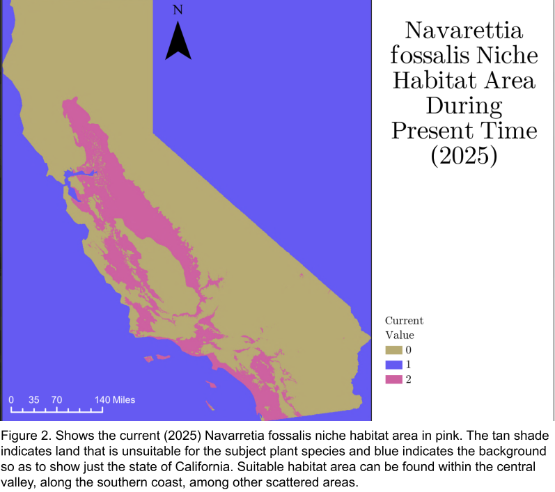
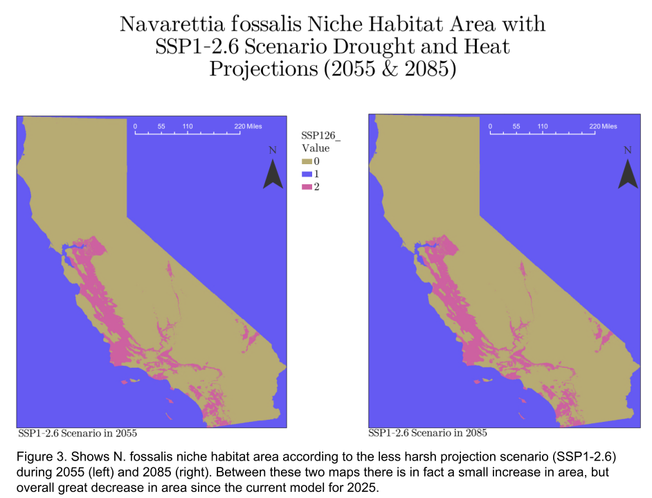
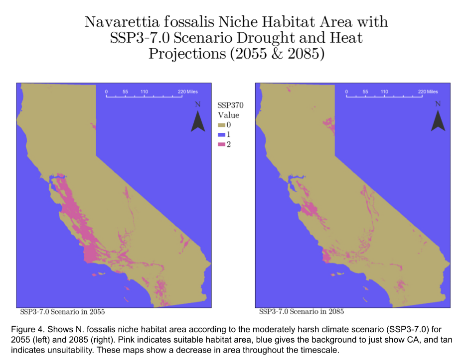
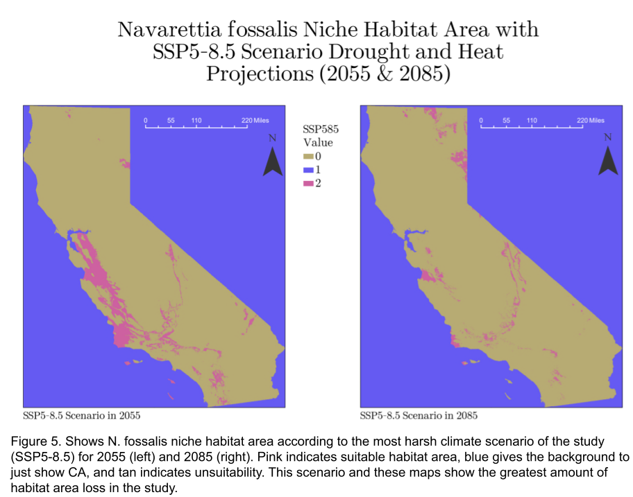
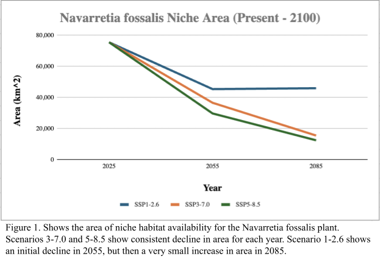

Navarettia fossalis Habiatat Suitability and Availability in Future Climate Projection Scenarios in California, USA
This project examined how different drought and temperature severity projections would impact the habitat availability and suitability of California native plant, Navarretia fossalis. This was a class project with real world impacts, as this project is the only one of its kind for this plant species. It is intended to show analyzed and interpreted climate risk assessment results.
Project Overview
This project integrated precipitation and temperature projections based on different emission scenarios, elevation rasters, observed species data, and boolean rasters to define habitat suitability in order to determine availbility.
Spatial Analysis





Tools & Methods
Raster calculator using boolean statements, extract values to points, raster projections, and Excel data visualization.